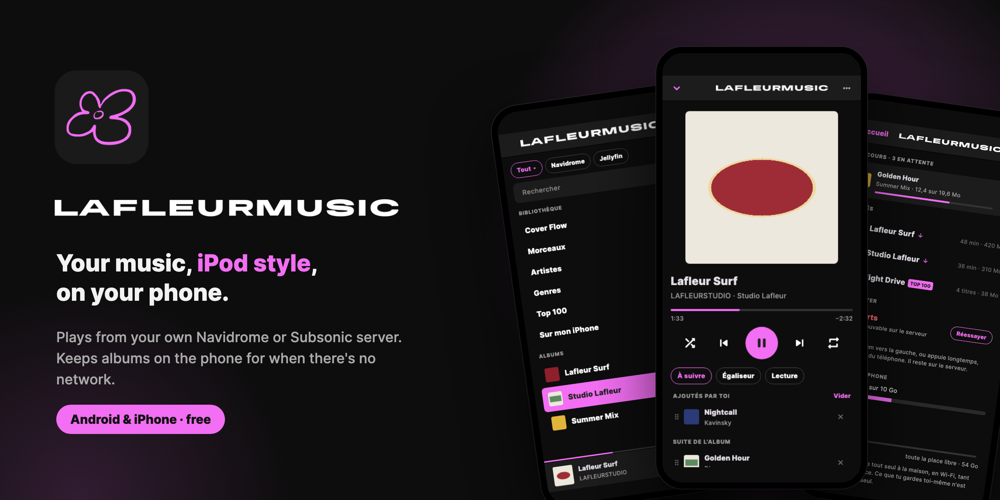
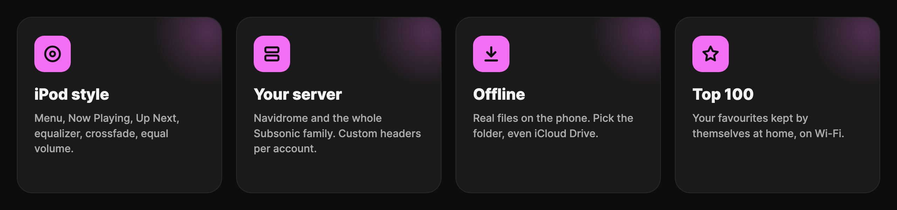

LAFLEURMUSIC 0.2.0 — your music, at home and outside

Android 7+ · iPhone (iOS 15+, unsigned IPA)

What's new in 0.2.0
- Keep albums and songs on the phone and listen with no network
- « On my iPhone » screen: downloads, space limit, folder of your choice
- Top 100 kept by itself at home · listens sent to the server when you're back
- New app icon, light and dark
Install in 1 minute
| Android | iPhone |
|---|
1. Tap Download for Android
2. Open the APK, allow this source
3. Add your Navidrome account |
1. Tap Download for iPhone
2. Install the IPA with your usual tool
3. Add your Navidrome account |
Coming next
- Several accounts merged · server playlists · Cover Flow in landscape · tablets · Jellyfin · Plex · Classic mode · light mode